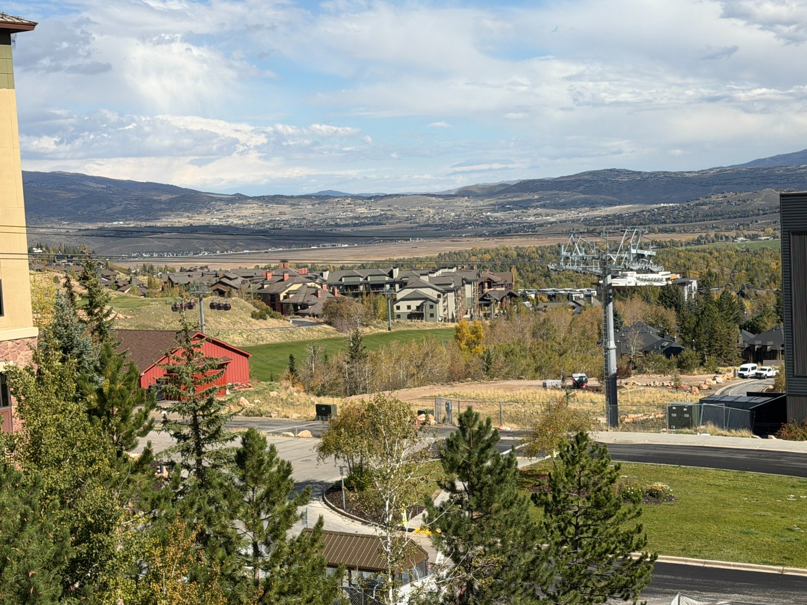

Staying in Canyons Village does not mean missing the town. Main Street is ten minutes away and it is worth an evening or two, not every evening.

Park City began as a silver mining town, and Main Street is the part that kept its buildings. That history is why it does not feel like a purpose-built resort street, and it is the main reason to make the trip in.
Getting there from Canyons Village
About ten minutes by road, longer during a holiday week. The useful thing to know first is that public transport here is free: Park City Transit and High Valley Transit run fare-free on every route, all year, so the cheapest option is also the one that does not need a parking space.
| Option | Cost | Worth knowing |
|---|---|---|
| Free bus | Nothing | Best if anybody is drinking. Buses run to the Old Town Transit Center, a short walk from Main Street. |
| Drive and park | Paid garages and lots | Simplest for a group with a booking. Patience required in a peak week. |
| Park and ride | Free parking, free bus | Leave the car at a park-and-ride such as Richardson Flat and take the bus in. |
| Taxi or rideshare | Metered | Fine, but availability drops in storms and at peak times. |
If you do drive, the parking to aim for is a garage rather than a kerbside space. Guides consistently name the garages on Main Street and Park Avenue, plus the lots on Swede Alley, and consistently warn that street parking in winter is a long shot. Rates and winter restrictions change, so check the current ones with the city rather than trusting a blog. Once you are in town there is also a free trolley running the length of Main Street, which matters more than it sounds when the street is icy and somebody is in the wrong shoes.
Route numbers and winter timetables do change between seasons, and the versions published on third-party sites are often a year or two old. Check the current schedule in the transit app before you rely on a specific route. More on the wider question in the guide to getting around.

What it is good at
Dinner, drinks, and walking around in the cold looking at a town that has been there since the 1880s. Restaurants across the range, bars with actual character, galleries, and shops that are not all selling the same fleece. Canyons Village trades that range for convenience, and what is actually in the village is a much shorter list.
It is also the answer on the day the weather closes in and nobody is skiing. A long lunch in town beats sitting in a condo, and the Park City Museum on Main Street is the one indoor stop that explains the buildings you have been walking past, with mining-era exhibits reported to include a mine rail car and an old jail cell. Our guide to days off the mountain covers the rest of the valley's options.
The Town Lift, and why it changes the day
The detail most Canyons Village guides leave out: Main Street has its own chairlift onto Park City Mountain. The Town Lift loads from Old Town, which means the town is not only an evening destination but a place you can ski from, and ski back to, inside the same resort you are already paying for.
That gives a group an option worth having on a storm day or a tired day. Ski across from the Canyons Village side, which is a long traverse over a resort this size, come down into Old Town, and the rest of the afternoon is lunch and shops instead of a cold drive home. Lift operations across Park City Mountain run 9am to 4pm, with individual lifts opening on their own schedules inside that window, so plan the crossing with daylight to spare rather than making it the last run of the day.
It also works in reverse, which is the part worth planning around: if half the group wants town and half wants the mountain, they can split in the morning and meet on Main Street at four without anyone needing a car. Which side of the resort suits a whole week is a bigger question, covered in Canyons Village or the Park City base.
When to go
Go early in the week rather than late. By Thursday of a ski week, most groups have lost interest in organising an evening out, and the plan quietly becomes cooking in again.
Book the table ahead during a holiday week. Walking into a restaurant on Main Street with eight people on a February Saturday is optimistic, and a party larger than about a dozen usually has to go through a restaurant's events or sales contact rather than its online booking. Sort that before you leave home, not on the day.
The Sundance question
For more than forty years the Sundance Film Festival filled Main Street every January, and most guides still describe it that way. It has gone: the festival moved to Boulder, Colorado from 2027, with January 2026 its final Utah edition. Main Street in January is quieter than it has been in a generation, and what is on instead is in our guide to Park City events in January 2027.
The practical consequence for a visitor is that the January crowding which used to be concentrated in town, in the walkable hotels and the theatres, is simply not there any more. If Main Street in January was something you had written off, it is worth another look.
Most groups get more out of one well-organised evening in town, booked in advance with transport sorted, than out of three vague attempts. Pick a night early in the week, book a table, and take the free bus. The villa kitchen covers the other evenings perfectly well.
Common questions
How far is Main Street from Canyons Village?
About ten minutes by road, longer in holiday traffic. Park City Transit and High Valley Transit are fare-free on every route, which is the easiest option if anybody plans to drink, and buses run to the Old Town Transit Center a short walk from Main Street.
Is the bus in Park City really free?
Yes. Both Park City Transit and High Valley Transit run fare-free on all routes, all year. Route numbers and winter timetables change between seasons, so check the current schedule in the transit app rather than relying on an older guide.
Can you ski to Main Street?
Yes. The Town Lift loads from Old Town onto Park City Mountain, so you can ski down into town and ride back out. Lift operations run 9am to 4pm across the resort, so plan the crossing from Canyons Village with daylight to spare.
Is it worth staying on Main Street instead?
It depends what the trip is for. Main Street gives you a town you can walk out into. Canyons Village gives you a short walk to the lift. Families with children usually get more from the second.
Is the Sundance Film Festival still in Park City?
No. The festival moved to Boulder, Colorado from 2027, and January 2026 was its final Utah edition. January in Park City is now a ski month, with two televised competitions in the last third of it.
The villa this guide comes from
We own a Premier Two-Bedroom Villa inside Westgate Park City Resort, in Canyons Village. It is 1,100 square feet, two king bedrooms and two queen sleeper sofas, so it sleeps eight in one unit. Full kitchen, two bathrooms, in-unit laundry, and a short walk to the Red Pine Gondola.
It is available for Presidents' Week 2027, 13 to 20 February, and we rent it ourselves rather than through an agency.